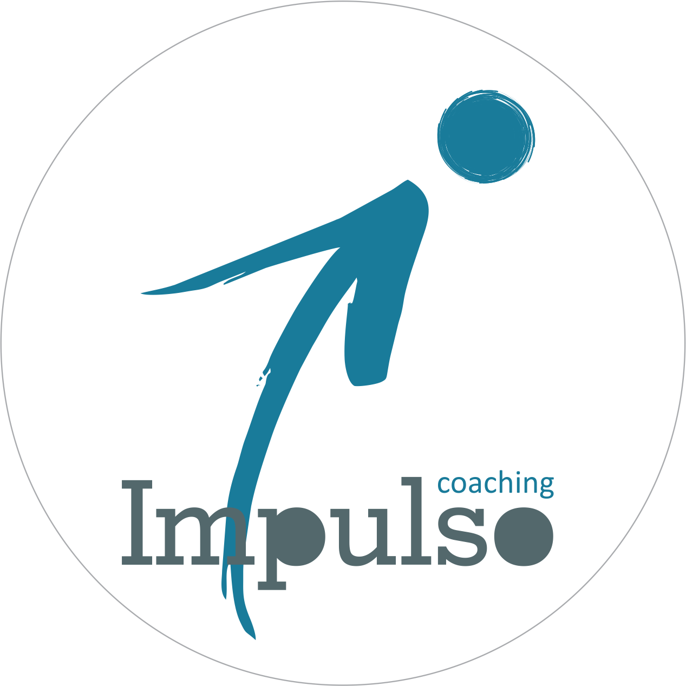

Instituto Impulso Coaching de Liderança
A mudança pode acontecer em um instante
Descubra como você investe sua energia vital e assuma o controle de suas tarefas.
O método de mapeamento utilizado nesta pesquisa é a Tríade do Tempo, criado por Christian Barbosa, autor do best-seller "A Tríade do Tempo". É um modelo prático de medir a produtividade inspirado em metodologias globais de gestão no tempo. Ela mapeia com precisão cirúrgica onde sua energia e foco estão sendo investidos diariamente.
Organizações e executivos que adotam esta metodologia, relatam ganhos expressivos de performance, com aumento de produtividade chegando a 50%. Agora, você iniciará o mesmo processo que líderes de alta performance utilizam para transformar agenda em resultado de alto impacto.
Instruções: Selecione a opção que reflete fielmente sua realidade atual: 1 (Nunca) à 5 (Sempre). Seja honesto para identificar a sua realidade atual. Não responda como gostaria de ser, mas como você realmente é hoje.
Por favor, preencha o nome.
Por favor, preencha um WhatsApp válido.
Por favor, preencha um e-mail válido.
Por favor, preencha a profissão.
Idade inválida.
Por favor, selecione a escolaridade.
Perfil Identificado
Atividades feitas por pressão externa, distrações e tarefas que não geram resultados alinhados aos seus objetivos estratégicos.
Tempo investido em planejamento, visão de futuro, saúde e metas. A verdadeira esfera dos líderes que geram impacto duradouro.
Demandas reativas, imprevistos constantes e prazos estourados. Gera alta carga de estresse, ansiedade e risco de burnout.